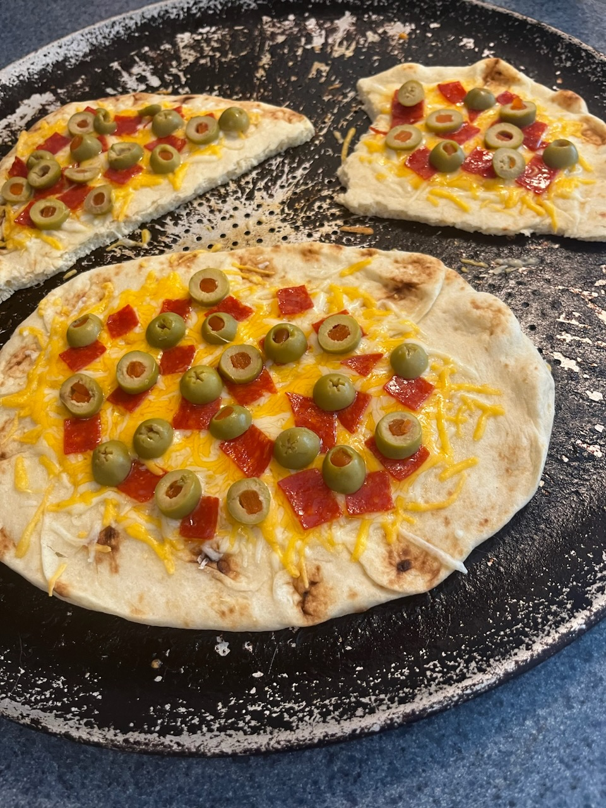

Back
Naan Pizza

Description
A simple, easily transported preparation for either conventional or toaster ovens which is reminiscent of pizza while retaining the unique nature of the flatbread.
Ingredients
- Handfull shredded cheese
- Two pieces of pepperoni, chopped
- 5 green olives, sliced
- 1 piece naan flatbread, or any other flatbread
Steps
- Preheat oven to 350F
- At the same time, chop pepperoni and slice olives
- Place one half of cheese on flatbread
- Add pepperoni and olives
- Add other half of cheese
- Place in oven on top rack for 6 minutes
- Remove and serve